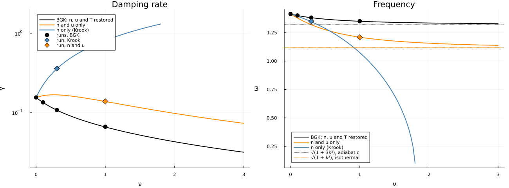
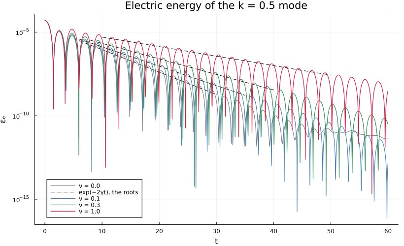
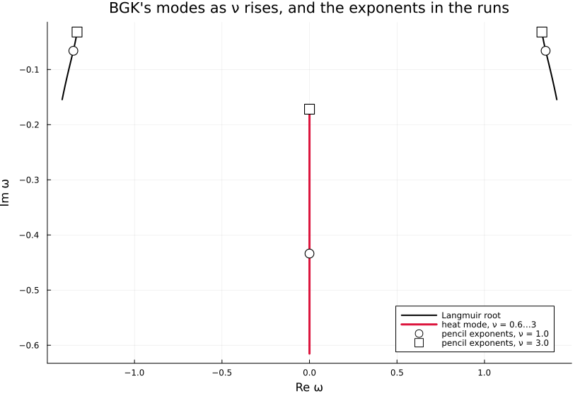
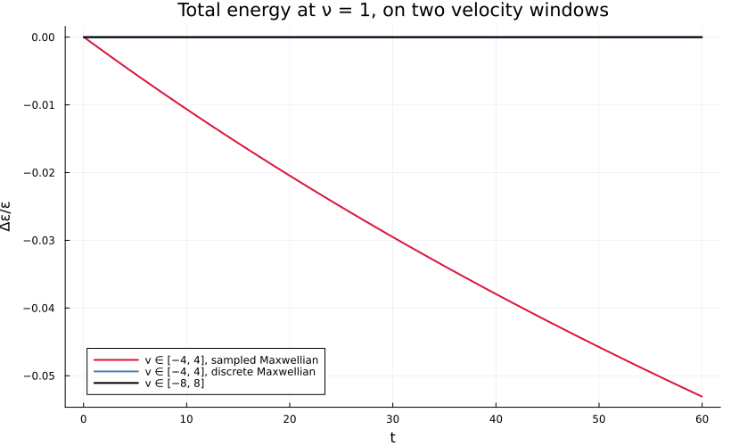

Collisional Landau damping
The BGK operator in the loop, against its own dispersion relation.
julia --project=verification verification/collisional-damping.jlThe Landau case – a Maxwellian perturbed by 1e-3·cos(kx) at k = 0.5 – with BGK relaxing every velocity line towards the Maxwellian of its own density, drift and temperature at rate ν. Linearised, that operator closes the kinetic equation on three moments, and the modes are the zeros of a 3×3 determinant built from the plasma dispersion function; collisional_root follows the Langmuir root from the Landau root as ν rises.
What it says is not what one might guess. Collisions do not add to the damping: they take it away, from Landau's 0.153 towards a fluid wave that damps only by conducting heat, at a rate falling as 1/ν, and oscillates at the adiabatic √(1 + 3k²). An operator that lost the temperature – restoring the density and the drift at the background T – or the drift as well, the Krook model, damps harder instead. The runs sit on BGK's curve, and runs with the two lesser operators sit on theirs.
BGK's energy conservation has one more consequence: a third mode, a temperature perturbation that does not oscillate and decays by conduction. The density seed excites it, and a matrix pencil of the field finds it where the dispersion relation puts it.
collisional_landau, PartialBGK and mode_exponents come from test/verification_harness.jl, collisional_root and heat_mode_root from test/dispersion.jl, and test/test_verification.jl asserts what this script draws.
using Plots
using Vasilek
include(joinpath(pkgdir(Vasilek), "test", "verification_harness.jl"))
here = @__DIR__
k = 0.5
operators = (((:n, :u, :T), "BGK: n, u and T restored", :black),
((:n, :u), "n and u only", :darkorange),
((:n,), "n only (Krook)", :steelblue));The runs
BGK at four rates, and each lesser operator at one.
νs_run = (0.0, 0.1, 0.3, 1.0)
windows = Dict(0.0 => (6.0, 30.0), 0.1 => (6.0, 35.0), 0.3 => (8.0, 40.0), 1.0 => (10.0, 50.0))
runs = Dict(ν => collisional_landau(ν) for ν in νs_run)
Δx = runs[0.0].Δx
fitted(r, w) = (first(damping_rate(r.t, r.ε_e; tmin = w[1], tmax = w[2])),
first(oscillation_frequency(r.t, r.ε_e; tmin = w[1], tmax = w[2])))
measured = Dict(ν => fitted(runs[ν], windows[ν]) for ν in νs_run)
lesser = [((:n,), 0.3, (4.0, 16.0)), ((:n, :u), 1.0, (8.0, 40.0))]
measured_lesser = [(C, ν, fitted(collisional_landau(ν; collisions = PartialBGK{C}(1/ν)), w))
for (C, ν, w) in lesser];Rate and frequency against ν
The rate and the frequency against ν, the theory on the grid's field. Past ν ≈ 1.85 the Krook pair merges on the imaginary axis, and its curve stops.
rate = plot(xlabel = "ν", ylabel = "γ", title = "Damping rate", legend = :topleft,
yscale = :log10, ylims = (0.02, 2.0))
freq = plot(xlabel = "ν", ylabel = "ω", title = "Frequency", legend = :bottomleft)
for (C, label, color) in operators
νmax = C == (:n,) ? 1.8 : 3.0
ν = range(0.0, νmax; length = 61)
roots = [collisional_root(k, q; Δx, conserve = C) for q in ν]
plot!(rate, ν, -imag.(roots); label = label, color = color, linewidth = 2)
plot!(freq, ν, real.(roots); label = label, color = color, linewidth = 2)
end
hline!(freq, [sqrt(1 + 3k^2)]; color = :black, linestyle = :dot, label = "√(1 + 3k²), adiabatic")
hline!(freq, [sqrt(1 + k^2)]; color = :darkorange, linestyle = :dot, label = "√(1 + k²), isothermal")
scatter!(rate, collect(νs_run), [measured[ν][1] for ν in νs_run]; color = :black,
markersize = 6, label = "runs, BGK")
scatter!(freq, collect(νs_run), [measured[ν][2] for ν in νs_run]; color = :black,
markersize = 6, label = "")
for (C, ν, (γ, ω)) in measured_lesser
color = C == (:n,) ? :steelblue : :darkorange
scatter!(rate, [ν], [γ]; color = color, markershape = :diamond, markersize = 7,
label = "run, $(C == (:n,) ? "Krook" : "n and u")")
scatter!(freq, [ν], [ω]; color = color, markershape = :diamond, markersize = 7, label = "")
end
savefig(plot(rate, freq; layout = (1, 2), size = (1300, 480), left_margin = 4Plots.mm,
bottom_margin = 5Plots.mm),
joinpath(here, "collisional-damping-roots.png"));
for ν in νs_run
root = collisional_root(k, ν; Δx)
γ, ω = measured[ν]
println("ν = ", rpad(ν, 4), " γ = ", round(γ; digits = 5), " (root ", round(-imag(root); digits = 5),
"), ω = ", round(ω; digits = 5), " (root ", round(real(root); digits = 5), ")")
endν = 0.0 γ = 0.15471 (root 0.15448), ω = 1.41372 (root 1.41321)
ν = 0.1 γ = 0.13409 (root 0.13359), ω = 1.40022 (root 1.39952)
ν = 0.3 γ = 0.10738 (root 0.10686), ω = 1.38162 (root 1.38051)
ν = 1.0 γ = 0.06599 (root 0.0655), ω = 1.34977 (root 1.34935)
The field energy, and the damping it is read from
energy = plot(yscale = :log10, xlabel = "t", ylabel = "εₑ", legend = :bottomleft,
title = "Electric energy of the k = 0.5 mode", size = (820, 500))
for (ν, color) in zip(νs_run, (:gray, :steelblue, :seagreen, :crimson))
r = runs[ν]
plot!(energy, r.t, r.ε_e; label = "ν = $ν", color = color, linewidth = 1.2)
root = collisional_root(k, ν; Δx)
i = findfirst(≥(windows[ν][1]), r.t)
tt = range(windows[ν][1], windows[ν][2]; length = 20)
plot!(energy, tt, maximum(r.ε_e[i:i+80]) .* exp.(2imag(root) .* (tt .- r.t[i]));
color = :black, linestyle = :dash, label = ν == 0.0 ? "exp(−2γt), the roots" : "")
end
savefig(energy, joinpath(here, "collisional-damping-energy.png"));
The complex frequency plane
BGK's Langmuir and heat branches as ν rises, and the exponents a matrix pencil finds in the field at ν = 1 and 3.
branch = plot(xlabel = "Re ω", ylabel = "Im ω", legend = :bottomright, size = (820, 560),
title = "BGK's modes as ν rises, and the exponents in the runs")
ν = range(0.0, 3.0; length = 61)
wave = [collisional_root(k, q; Δx) for q in ν]
plot!(branch, real.(wave), imag.(wave); color = :black, linewidth = 2, label = "Langmuir root")
plot!(branch, -real.(wave), imag.(wave); color = :black, linewidth = 2, label = "")
νh = range(0.6, 3.0; length = 41)
plot!(branch, zeros(length(νh)), -heat_mode_root.(k, νh; Δx); color = :crimson, linewidth = 3,
label = "heat mode, ν = 0.6…3")
for (q, marker) in ((1.0, :circle), (3.0, :square))
r = q == 1.0 ? runs[1.0] : collisional_landau(q)
s = mode_exponents(r.t, r.E; tmin = 4.0, tmax = 30.0)
# E_k ∝ exp(st) = exp(−iωt), so each exponent is the root ω = is.
scatter!(branch, -imag.(s), real.(s); color = :white, markerstrokecolor = :black,
markershape = marker, markersize = 7, label = "pencil exponents, ν = $q")
g = heat_mode_root(k, q; Δx)
heat = s[argmin(abs.(imag.(s)))]
println("ν = ", q, ": heat mode ", round(-real(heat); digits = 5), " (root ", round(g; digits = 5), ")")
end
savefig(branch, joinpath(here, "collisional-damping-plane.png"));ν = 1.0: heat mode 0.43377 (root 0.43369)
ν = 3.0: heat mode 0.17195 (root 0.17149)

What the velocity window costs
The sampled Maxwellian of 0.1, BGK(τ; conservative = false), takes each line's temperature over the window it is given and puts back a Maxwellian on the whole line; on ±4 the tail it cannot see is missing from the temperature, and every relaxation cools the line by it. The narrowed Maxwellian peaks 2.2% above the initial maximum of f, which the driver's defaults no longer bound when there are collisions. The default discrete Maxwellian conserves the energy on ±4 as on ±8.
discrete4 = collisional_landau(1.0; vmax = 4.0, Δt = 0.08, invariants = true)
narrow = collisional_landau(1.0; vmax = 4.0, Δt = 0.08, invariants = true,
collisions = BGK(1.0; conservative = false))
wide = collisional_landau(1.0; invariants = true)
drift(r) = (r.r.ε[1:end-1] .- r.r.ε[1]) ./ r.r.ε[1]
window = plot(xlabel = "t", ylabel = "Δε/ε", legend = :bottomleft, size = (820, 500),
title = "Total energy at ν = 1, on two velocity windows")
plot!(window, narrow.t, drift(narrow); label = "v ∈ [−4, 4], sampled Maxwellian", color = :crimson, linewidth = 2)
plot!(window, discrete4.t, drift(discrete4); label = "v ∈ [−4, 4], discrete Maxwellian", color = :steelblue, linewidth = 2)
plot!(window, wide.t, drift(wide); label = "v ∈ [−8, 8]", color = :black, linewidth = 2)
savefig(window, joinpath(here, "collisional-damping-window.png"));
println("ν = 1: energy by t = 60 moves ", round(drift(narrow)[end]; sigdigits = 3), " on ±4 sampled, ",
round(drift(discrete4)[end]; sigdigits = 3), " on ±4 discrete, and ",
round(drift(wide)[end]; sigdigits = 3), " on ±8")ν = 1: energy by t = 60 moves -0.0531 on ±4 sampled, 7.97e-8 on ±4 discrete, and 8.03e-9 on ±8
This page was generated using Literate.jl.